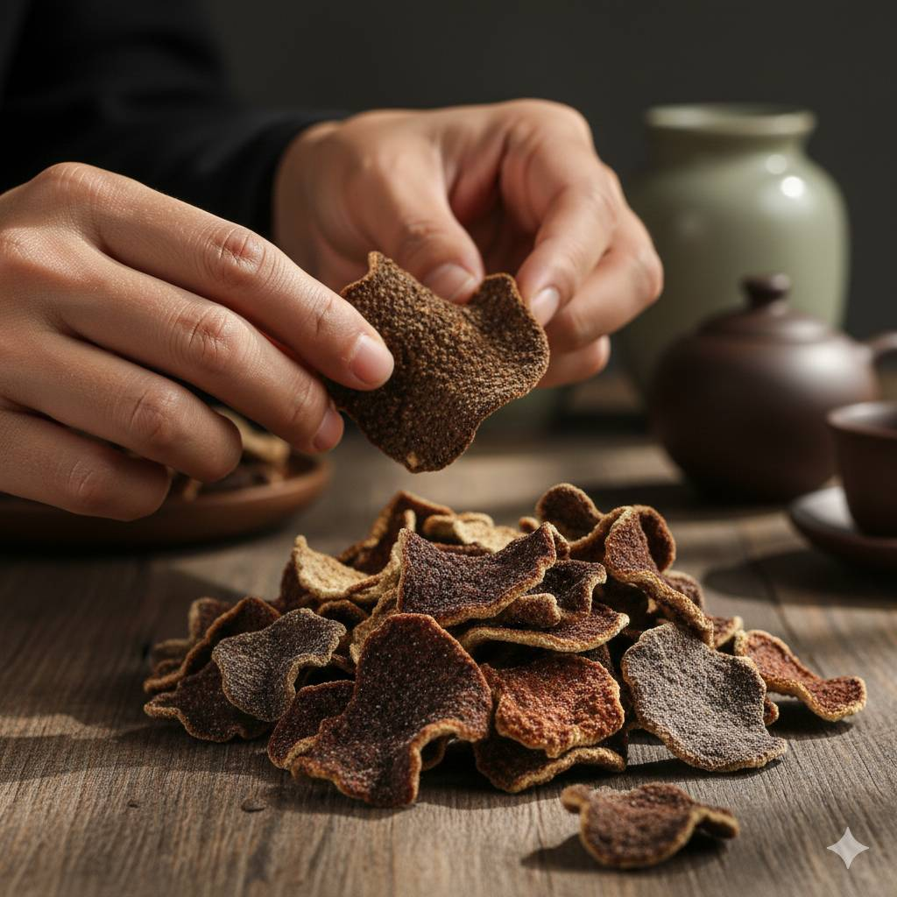

你有沒有想過，一片陳皮裏藏着多少年的時光？
你有沒有拿起過一片陳皮，放在鼻尖輕輕嗅？那一瞬間，你聞到的不是簡單的柑橘香，而是時間慢慢沉澱下來的醇厚。你或許不知道，這片看似普通的果皮，要在新會的陽光下翻曬、在幹倉裏靜靜呼吸，三年、五年、十年……
你想象一下，天馬村的老果農清晨五點起牀，踩着露水走進果園。他的雙手粗糙，卻温柔得像在撫摸嬰兒。你問他累不累，他笑笑説："陳皮會記住的。"
"每天寫一篇陳皮日記，講真話、説故事、幫你避坑。"
你可能在短視頻上刷到過我怎麼開皮、怎麼翻曬、怎麼被外地客商壓價……但我更想讓你知道，每一片陳皮背後，是一個果農家庭一年的盼頭。

你有沒有拿起過一片陳皮，放在鼻尖輕輕嗅？那一瞬間，你聞到的不是簡單的柑橘香，而是時間慢慢沉澱下來的醇厚。你或許不知道，這片看似普通的果皮，要在新會的陽光下翻曬、在幹倉裏靜靜呼吸，三年、五年、十年……
你想象一下，天馬村的老果農清晨五點起牀，踩着露水走進果園。他的雙手粗糙，卻温柔得像在撫摸嬰兒。你問他累不累，他笑笑説："陳皮會記住的。"
你看到的是真實的果園、真實的倉庫、真實的開皮過程。沒有劇本，沒有濾鏡。
我不會跟你説"黃酮含量""揮發油"，我就告訴你：這皮聞起來怎麼樣、泡出來什麼顏色、值不值這個價。
收到不滿意，七天無理由退。我敢這麼説，是因為我對自己的陳皮有信心。
我70%的客户是老客户介紹的。你説好不好，他們説了算。
因為我賣的是真貨。網上那些"十年陳皮"99塊錢包郵的，你信嗎？我算過賬，光原料和倉儲成本都不止這個價。你願意花99買假皮，還是花幾百買真貨，自己選。
你可以先買50g試喝，不滿意退給我，運費我出。或者來看我直播，我現場給你看倉庫、看陳皮、泡給你看。眼見為實。
看你預算。300-500送天馬5年，體面又實惠；1000以上送梅江10年，懂行的人一看就懂。不知道怎麼選，私信我，我幫你搭配。
避光、通風、乾燥，每年翻曬2-3次。別用塑料袋密封，會悶壞。棉麻袋或陶瓷罐最好。詳細的我在日記裏寫過，可以搜"存儲"看看。
現場開皮、現場沖泡、現場回答你的問題。不買也沒關係，來聊聊天，學點陳皮知識。